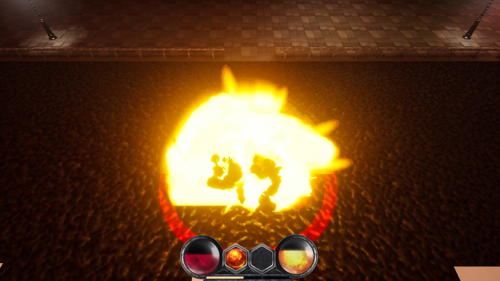
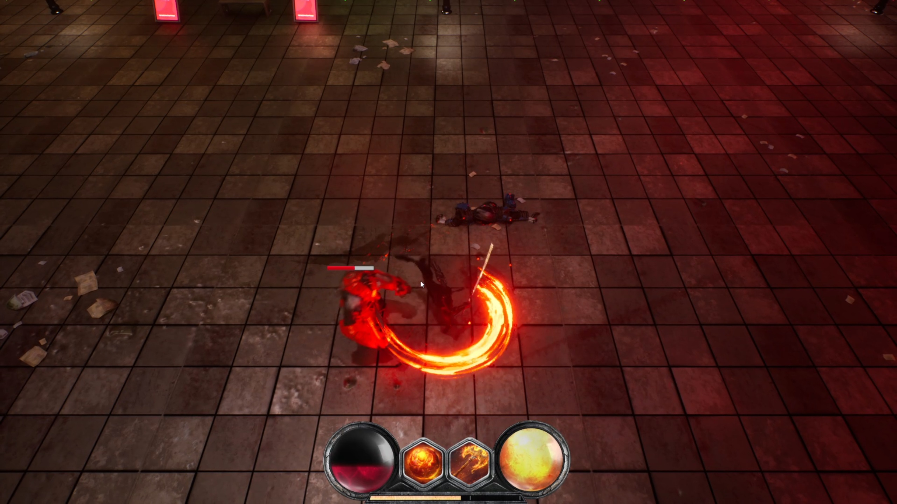
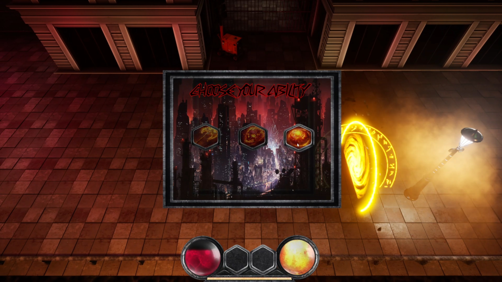

Bachelor Thesis Project
Drops of Lethe
Cyberpunk roguelike hack’n’slash prototype with strong focus on gameplay systems, combat feel and testing / iteration.
Bachelor Thesis Project
Drops of Lethe
Cyberpunk roguelike hack’n’slash prototype with strong focus on gameplay systems, combat feel and testing / iteration.
Project Overview
Drops of Lethe is a single-player roguelike hack’n’slash game set in a dystopian cyberpunk world. The player controls Edward Grove, a protagonist trying to recover lost memories while progressing through dangerous areas of a futuristic megacity.
Game Direction
The project combines dynamic hack’n’slash combat with roguelike replayability and a dark cyberpunk setting inspired by modern action games and dystopian sci-fi themes.
Core Gameplay
- Fast melee combat
- Stamina-based dodge system
- Active and passive abilities
- Room progression with rewards
Tech & Tools
- Unreal Engine 5.4
- Blueprint-based systems / C++ optimization
- GitHub
- Blender + external assets
My Contribution
Gameplay Systems
I was responsible for a large part of the gameplay layer. My work included movement, camera setup, combat logic, combo implementation, abilities, dodge mechanics, HUD integration, final boss work, map randomness and gameplay-related fixes.
Iteration & Debugging
Besides implementation, I spent a lot of time improving mechanics in practice, testing how they felt during gameplay, fixing logic issues and making combat more responsive, readable and satisfying.
Testing & QA Perspective
What was tested
- Combat flow and responsiveness
- Enemy behavior and encounter logic
- HUD and stamina integration
- Progression between rooms / levels
Why it matters
This project was important to me not only from the game development side, but also from the QA perspective. Building and testing gameplay systems taught me how small logic issues can directly affect player experience and how important iteration, validation and debugging are in interactive software.
Selected Screens

Gameplay screenshot

Combat screenshot

HUD screenshot